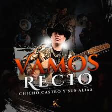

ARTISTA 01
Chicho Castro
Un artista para disfrutar de la música regional mexicana y agregar sabor a cualquier playlist.
Escuchar música ↗MÚSICA • ESTILO • SENTIMIENTO
Mi playlist de música mexicana favorita
La música es parte de nuestra vida. En esta página encontrarás a tres de mis artistas favoritos: Chicho Castro, Los Dos de Tamaulipas y Hermanos Espinoza. ¡Disfruta de sus canciones!

Un artista para disfrutar de la música regional mexicana y agregar sabor a cualquier playlist.
Escuchar música ↗
Una propuesta musical del regional mexicano para quienes disfrutan de los sonidos y las historias de la música norteña.
Escuchar música ↗
Un nombre para descubrir y disfrutar canciones del regional mexicano, compartir con amigos y escuchar en casa.
Escuchar música ↗DALE PLAY
Selecciona un artista para buscar sus canciones.
¿Cuál de estos artistas te gusta más?